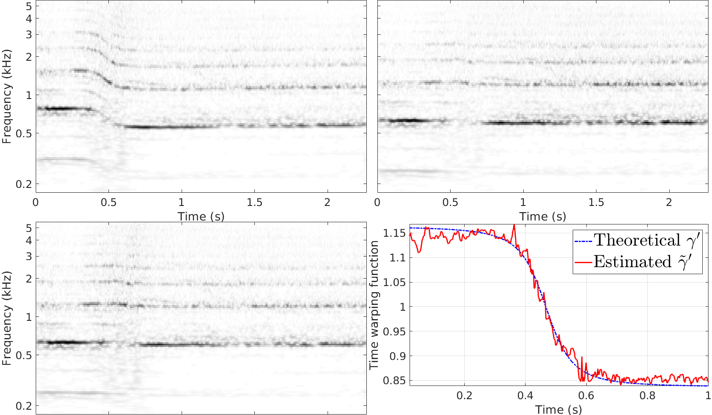

Contents
Deformation estimations on a moving racing car recording
Copyright (C) 2017 Adrien MEYNARD
This program is free software; you can redistribute it and/or modify it under the terms of the GNU General Public License as published by the Free Software Foundation; either version 3 of the License, or (at your option) any later version.
This program is distributed in the hope that it will be useful, but WITHOUT ANY WARRANTY; without even the implied warranty of MERCHANTABILITY or FITNESS FOR A PARTICULAR PURPOSE. See the GNU General Public License for more details.
You should have received a copy of the GNU General Public License along with this program. If not, see http://www.gnu.org/licenses/.
Author: Adrien MEYNARD Email: adrien.meynard@univ-amu.fr Created: 2017-12-19
clear all; close all; clc; warning off; addpath('cwt'); addpath('deform_estimation'); load('signals/doppler_f1'); T = length(y);
Joint estimation
Dt = 100; % temporal subsampling for the deformation estimation dgamma0 = ones(1,T); % gamma'(t) initialization a0 = ones(1,T); % a(t) initialization wav_typ = 'sharp'; % wavelet type (cf. cwt_JEFAS.m) wav_paramWP = 20; % corresponding parameter for warping estimation wav_param = 500; % corresponding parameter for spectrum and AM estimations NbScales = 125; scalesAM = 2.^(linspace(1,6,NbScales)); subrate = 3; % subsampling step for the scales to ensure the covariance invertibility scalesWP = scalesAM(1:subrate:end); stopWP = 2e-2; % minimal gap between two steps in the gradient itWP = 6; % number of gradient iterations r = 1e-5; % regularization parameter Nf = 2500; % number of frequencies for spectrum estimation NbScalesS = 110; scalesS = 2.^(linspace(-1,7,NbScalesS)); % for spectrum estimation Nit = 10; % maximal number of iterations in the joint estimation stop_crit = 5e-3; % relative update threshold paramWAV = {wav_typ,wav_param,wav_paramWP}; paramAM = {'AM',scalesAM,r}; % AM (model without noise) paramWP = {scalesWP,itWP,stopWP}; paramS = {scalesS,Nf}; % AM + WP estimation fprintf('\nJoint AM and Time Warping estimation: \n\n') tic; [aML, dgammaML, Sx, evol_crit] = estim_altern(y,Dt,dgamma0,a0,paramWAV,paramWP,paramAM,paramS,stop_crit,Nit); toc; % WP estimation only fprintf('\nTime Warping estimation only (model without AM): \n\n') paramAM2 = {'no AM'}; % model with time warping only tic; [aML2, dgammaML2, Sx2, evol_crit2] = estim_altern(y,Dt,dgamma0,a0,paramWAV,paramWP,paramAM2,paramS,stop_crit,Nit); toc;
Joint AM and Time Warping estimation: Iteration 1 Relative update WP: Inf % Relative update AM: 48.63 % Iteration 2 Relative update WP: 75.81 % Relative update AM: 38.41 % Iteration 3 Relative update WP: 310.62 % Relative update AM: 8.27 % Iteration 4 Relative update WP: 151.26 % Relative update AM: 6.47 % Iteration 5 Relative update WP: 0.88 % Relative update AM: 31.57 % Iteration 6 Relative update WP: 0.05 % Relative update AM: 0.12 % Elapsed time is 304.921637 seconds. Time Warping estimation only (model without AM): Iteration 1 Relative update WP: Inf % Iteration 2 Relative update WP: 259.61 % Iteration 3 Relative update WP: 261.89 % Iteration 4 Relative update WP: 1.10 % Iteration 5 Relative update WP: 0.03 % Elapsed time is 224.996872 seconds.
Wavelet transforms
addpath('analysis'); z = statAMWP(y,aML,dgammaML); % AM + WP estimations => stationarization z2 = statAMWP(y,aML2,dgammaML2); % WP estimation only => stationarization Wy = cwt_JEFAS(y,scalesAM,'sharp',wav_param); Wz = cwt_JEFAS(z,scalesAM,'sharp',wav_param); Wz2 = cwt_JEFAS(z2,scalesAM,'sharp',wav_param); t = linspace(0,(T-1)/Fs,T); xi0 = Fs/4; % wavelet central frequency freqdisp = [5 4 3 2 1 0.5 0.2]; % Displayed frequencies sdisp = log2(xi0./(1e3*freqdisp)); % coreesponding log-scales figure; colormap(flipud(gray)); subplot('Position', [0.05 0.535, 0.465, 0.465]); imagesc(t,log2(scalesAM),log1p(abs(Wy))); xlabel('Time (s)'); ylabel('Frequency (kHz)'); yticks(sdisp); yticklabels(freqdisp); set(gca,'fontsize',18); subplot('Position', [0.53 0.535, 0.465, 0.465]); imagesc(t,log2(scalesAM),log1p(abs(Wz))); xlabel('Time (s)'); yticks(sdisp); yticklabels([]); set(gca,'fontsize',18); subplot('Position', [0.05 0.001, 0.465, 0.465]); imagesc(t,log2(scalesAM),log1p(abs(Wz2))); ylabel('Frequency (kHz)'); yticks(sdisp); yticklabels(freqdisp); set(gca,'fontsize',18);
Doppler effect
c = 330; v = 54; d = 5; L = 25.2; dgammaTH = 1 + v.*(L-v.*t)./sqrt(d^2*(c^2-v.^2) + c^2*(L-v.*t).^2); % theoretical gamma' dgammaMLn = 1.02*dgammaML*mean(dgammaTH)/mean(dgammaML); % /!\ normalization (gamma' is estimated up to a multiplicative factor) p = subplot('Position', [0.575 0.07, 0.42, 0.39]); plot(t,dgammaTH,'b-.',t,dgammaMLn,'r', 'linewidth',2); grid on; axis tight; xlabel('Time (s)'); ylabel('Time warping function'); xlim([0.02 1]); legend({'Theoretical $\gamma''$','Estimated $\tilde\gamma''$'},'interpreter','latex','FontSize',30); set(gca, 'FontSize', 18);